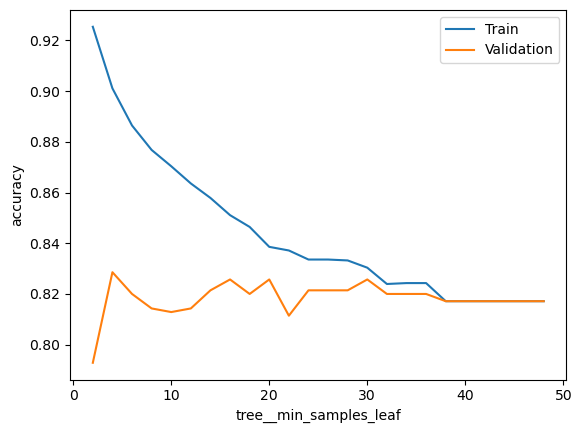

In this exercise set, we will mainly be looking at different supervised learning algorithms, both tinkering around with them and seeing how the models perform for a given dataset. We will look at:
Logistic regression
Decision tree
Ensemble methods
Random Forest
AdaBoost
Neural network
If you in general need more information about models or how to tune their hyperparameters, try looking up the documentation or googling hyperparameter tuning + model_name
Throughout your career, you’ve probably worked with many problems. Some problems can easily be formulated as regression problem, whereas others are easily formulated as a classification problem.
Exercise 1.1
Name three different problems which you’ve worked with where the outcome of interest was: - Continuous (regression) - Categorical (classification)
Have you encountered problems where the outcome of interest could be both continuous and categorical? Would being able to predict these outcomes of interest be valuable?
For this session, I invite you to use a dataset of your own, as different models work best for different problems:
This can be either a regression problem or a classification problem.
Feel free to preprocess in another program and export it as a csv file or another format of your choosing
The exercises are designed with a classification problem in mind, but all exercises except the ones about confusion matrices can be exchanged for regression problems by changin from a Classifier to a Regressor model.
The dataset I’ve decided upon is a dataset regarding classification of high income people, namely the Census Income Data Set from the UCI Machine Learning Repository. I’ve reduced the amount of features and sample size, as well as done a little bit of cleaning, from the full sample to reduce computation time. All the categorical features are one-hot encoded.
# Suppress convergencewarnings if they appearimport warningsfrom sklearn.exceptions import ConvergenceWarningwarnings.filterwarnings(action='ignore', category=ConvergenceWarning)# Actual code to loadimport pandas as pddf = pd.read_csv('adult_preprocessed.csv')df.describe()
high_income
age
education_num
hours_per_week
capital_gain
capital_loss
sex_female
sex_male
race_black
race_white
marital_status_divorced
marital_status_married_civ_spouse
marital_status_never_married
count
876.000000
876.000000
876.000000
876.000000
876.000000
876.000000
876.000000
876.000000
876.000000
876.000000
876.000000
876.000000
876.000000
mean
0.243151
37.535388
10.070776
40.142694
1486.558219
88.038813
0.302511
0.697489
0.085616
0.914384
0.155251
0.498858
0.345890
std
0.429230
13.106417
2.439581
11.915376
9766.347789
411.781508
0.459608
0.459608
0.279957
0.279957
0.362351
0.500284
0.475929
min
0.000000
17.000000
2.000000
2.000000
0.000000
0.000000
0.000000
0.000000
0.000000
0.000000
0.000000
0.000000
0.000000
25%
0.000000
27.000000
9.000000
40.000000
0.000000
0.000000
0.000000
0.000000
0.000000
1.000000
0.000000
0.000000
0.000000
50%
0.000000
37.000000
10.000000
40.000000
0.000000
0.000000
0.000000
1.000000
0.000000
1.000000
0.000000
0.000000
0.000000
75%
0.000000
46.000000
12.000000
45.000000
0.000000
0.000000
1.000000
1.000000
0.000000
1.000000
0.000000
1.000000
1.000000
max
1.000000
90.000000
16.000000
99.000000
99999.000000
3683.000000
1.000000
1.000000
1.000000
1.000000
1.000000
1.000000
1.000000
Exercise 1.2
What column in the DataFrame is the target of interest? Subset this as a Series called y, and the rest of the columns as a DataFrame called X
Hints:
y = df['column_name'] subsets a column as a Series.
X = df.drop(columns='column_name') drops a column in a dataframe
### BEGIN SOLUTIONX = df.drop(columns='high_income')y = df['high_income']### END SOLUTION
Exercise 1.3
As a first step, you should split the data into a development and test set. Make a development and test split with 80% of the data in the development set. Name them X_dev, X_test, y_dev and y_test
Hints:
Try importing train_test_split from sklearn.model_selection
### BEGIN SOLUTIONfrom sklearn.model_selection import train_test_splitX_dev, X_test, y_dev, y_test = train_test_split(X, y, train_size=0.8, random_state=73)### END SOLUTION
Validation curves
Last week, you were introduced to validation curves. This is a way of getting an understanding how a single hyperparameter changes the performance of a model on both seen and unseen data. We will be using this tool throughout these exercises to probe the models and see how the hyperparameters change the performance of the model.
Below I’ve created a snippet of code, which you can copy and use to create the validation curves. This is essentially a function, but I’ve refrained from creating a function so you can easily change it around.
To use it, we need to define four things:
A modelling pipeline, e.g. a Pipeline with PolynomialFeatures, StandardScaling then Lasso
A hyperparameter range, e.g. np.logspace(-4, 4, 10)
The name of the modelling step and the hyperparameter name, e.g. lasso__alpha
Also make sure that your development data is called X_dev and y_dev.
Note that you can change the scale (normal vs log) by changing logx to False
from sklearn.model_selection import validation_curvefrom sklearn.pipeline import Pipelineimport pandas as pd# Modelling pipeline we want to usepipeline =# FILL IN# The measure we want to evaluate or model againstscore_type =# FILL IN# A range of hyperparameter values we want to examineparam_range =# FILL IN# The name of the step in the pipeline and the name of the hyperparameterparam_name =# FILL IN# Calculate train and test scores using 5 fold cross validationtrain_scores, test_scores =\ validation_curve(estimator = pipeline, X = X_dev, y = y_dev, param_name = param_name, param_range = param_range, cv =5)# Convert train and test scores into a DataFramescore_df = pd.DataFrame({'Train':train_scores.mean(axis=1),'Validation':test_scores.mean(axis=1), param_name:param_range})# Plot the scores as a function of hyperparameterf, ax = plt.subplots()score_df.set_index(param_name).plot(logx=True, ax=ax)
SyntaxError: invalid syntax (2883952296.py, line 6)
Logistic Regression
Here I give an example with LogisticRegression, as this is the only model we are going to be examining today which only supports classification.
from sklearn.model_selection import validation_curvefrom sklearn.pipeline import Pipelineimport pandas as pdimport numpy as npimport matplotlib.pyplot as plt# Additional importsfrom sklearn.preprocessing import StandardScalerfrom sklearn.linear_model import LogisticRegression# Pipeline with StandardScaler and LogisticRegression (could add PolynomialFeatures etc.)pipeline = Pipeline([ ('scaler', StandardScaler()), ('logit', LogisticRegression())])# I want to evaluate the hyperparameter with accuracyscore_type ='accuracy'# Logarithmically spaced between 10^-4 and 10^4param_range = np.logspace(-2, 2, 20)# Model step is called 'logit', hyperparameter is called 'C'param_name ='logit__C'# Remember two underscores# Calculate train and test scores using 5 fold cross validationtrain_scores, test_scores =\ validation_curve(estimator = pipeline, X = X_dev, y = y_dev, scoring = score_type, param_name = param_name, param_range = param_range, cv =5)# Convert train and test scores into a DataFramescore_df = pd.DataFrame({'Train':train_scores.mean(axis=1),'Validation':test_scores.mean(axis=1), param_name:param_range})# Plot the scores as a function of hyperparameterf, ax = plt.subplots()score_df.set_index(param_name).plot(logx=True, ax=ax)ax.set_ylabel(score_type)plt.show()
As expected, we find that lower values of C corresponds to higher regularization, which causes the model to underfit on both the training and test data. For higher values of C the model starts to overfit, where we see a gap between the train and validation scores. However, the out of sample performance does not seem to be too bad even with very little regularization.
score_df
Train
Validation
logit__C
0
0.805000
0.798571
0.010000
1
0.816071
0.807143
0.016238
2
0.826429
0.818571
0.026367
3
0.829286
0.822857
0.042813
4
0.829286
0.820000
0.069519
5
0.835714
0.821429
0.112884
6
0.838571
0.825714
0.183298
7
0.838929
0.824286
0.297635
8
0.841786
0.827143
0.483293
9
0.841429
0.828571
0.784760
10
0.843571
0.828571
1.274275
11
0.843571
0.827143
2.069138
12
0.842857
0.827143
3.359818
13
0.841429
0.828571
5.455595
14
0.841071
0.828571
8.858668
15
0.840714
0.827143
14.384499
16
0.840714
0.827143
23.357215
17
0.840714
0.827143
37.926902
18
0.840714
0.827143
61.584821
19
0.840714
0.827143
100.000000
Exercise 1.3
Having now examined how the logistic regression, we want to see how it performs on the test data. Create a pipeline with the best hyperparameter found before, fit on the development data and calculate the accuracy on the test data.
Hints:
Try importing accuracy_score from sklearn.metrics
best_param = score_df.iloc[score_df['Validation'].idxmax()][param_name] gets the hyperparameter for the highest validation score
### BEGIN SOLUTIONfrom sklearn.metrics import accuracy_scorebest_param = score_df.iloc[score_df['Validation'].idxmax()][param_name]pipeline = Pipeline([ ('scaler', StandardScaler()), ('logit', LogisticRegression(C=best_param))])pipeline.fit(X_dev, y_dev)print(f'Test score {accuracy_score(pipeline.predict(X_test), y_test):.3f}')### END SOLUTION
Test score 0.835
Exercise 1.4
Plot the confusion matrix using the pipeline from last exercise using the test set. Has the model learnt anything useful? > Hints: > > Try importing ConfusionMatrixDisplay from sklearn.metrics > > If this fails, there also exists a deprecated function sklearn.metrics.plot_confusion_matrix, which is available in previous versions of sklearn
### BEGIN SOLUTIONfrom sklearn.metrics import ConfusionMatrixDisplaydisp = ConfusionMatrixDisplay.from_estimator(pipeline, X_test, y_test)plt.show()# Not just predicting majority class, the model has indeed learnt something!# deprecated function#from sklearn.metrics import plot_confusion_matrix#plot_confusion_matrix(pipeline, X_test, y_test)### END SOLUTION
Exercise 1.5
If you’re using the dataset I gave you, you might have noticed that the class distribution is not completely equal, which can be seen both using summary statistics and in the confusion matrix. In this setting, a baseline model becomes even more important, as a model which guesses the majority class all the time might perform quite well if the data is imbalanced enough.
Create a pipeline with a baseline model that always guesses the majority class
Hints:
try importing DummyClassifier from sklearn.dummy
### BEGIN SOLUTIONfrom sklearn.dummy import DummyClassifierpipeline = Pipeline([ ('dummy', DummyClassifier())])pipeline.fit(X_dev, y_dev)print(f'Test score {accuracy_score(pipeline.predict(X_test), y_test):.3f}')### END SOLUTION
Test score 0.761
Exercise 1.6 (OPTIONAL)
What would the confusion matrix for this dummy classifier look like? Try plotting it: Was your intuition correct?
Hints:
Try importing ConfusionMatrixDisplay from sklearn.metrics
If this fails, there also exists a deprecated function sklearn.metrics.plot_confusion_matrix, which is available in previous versions of sklearn
### BEGIN SOLUTIONfrom sklearn.metrics import ConfusionMatrixDisplaydisp = ConfusionMatrixDisplay.from_estimator(pipeline, X_test, y_test)plt.show()# deprecated function#from sklearn.metrics import plot_confusion_matrix#plot_confusion_matrix(pipeline, X_test, y_test)### END SOLUTION
Decision Tree
Having now examined a logistic regression, baseline models and the confusion matrix, we turn to the more exotic models you were introduced to today, starting with the decision tree.
Exercise 2.1
What does the max_depth parameter in a decision tree do? Does the model overfit more or less if you increase this value? > Create a validation plot with values of max_depth. Use the values np.unique(np.logspace(0, 4, 10).astype(int)) which returns integers which are evenly spaced on a log scale. Why should they be converted to integers?
Hints:
Try importing DecisionTreeClassifier or DecisionTreeRegressor from sklearn.tree
### BEGIN SOLUTION# Controls the maximum depth of the tree. # Higher values permit more overfittingfrom sklearn.tree import DecisionTreeClassifier pipeline = Pipeline([ ('tree', DecisionTreeClassifier())])score_type ='accuracy'param_range = np.unique(np.logspace(0, 4, 10).astype(int))param_name ='tree__max_depth'# Calculate train and test scores using 5 fold cross validationtrain_scores, test_scores =\ validation_curve(estimator = pipeline, X = X_dev, y = y_dev, scoring = score_type, param_name = param_name, param_range = param_range, cv =5)# Convert train and test scores into a DataFramescore_df = pd.DataFrame({'Train':train_scores.mean(axis=1),'Validation':test_scores.mean(axis=1), param_name:param_range}) # Plot the scores as a function of hyperparameterf, ax = plt.subplots()score_df.set_index(param_name).plot(logx=True, ax=ax)ax.set_ylabel(score_type)plt.show()### END SOLUTION
Exercise 2.2
What does the min_samples_split parameter in a decision tree do? Does the model overfit more or less if you increase this value?
Create a validation plot with values of min_samples_split. Use the values np.arange(0.05, 1.05, 0.05) which returns fractions from 0.05 to 1, spaced 0.05 apart.
What do these fractions mean?
### BEGIN SOLUTION# min_samples_split decides how many samples are required in an internal node before it can be split# Higher values reduce overfitting# By giving it fractions, it is interpreted as ceil(min_samples_split * n_samples),# i.e. share of sample size, which turns it into an integer againfrom sklearn.tree import DecisionTreeClassifier pipeline = Pipeline([ ('tree', DecisionTreeClassifier())])score_type ='accuracy'param_range = np.arange(0.05, 1.05, 0.05)param_name ='tree__min_samples_split'# Calculate train and test scores using 5 fold cross validationtrain_scores, test_scores =\ validation_curve(estimator = pipeline, X = X_dev, y = y_dev, scoring = score_type, param_name = param_name, param_range = param_range, cv =5)# Convert train and test scores into a DataFramemse_score = pd.DataFrame({'Train':train_scores.mean(axis=1),'Validation':test_scores.mean(axis=1), param_name:param_range})# Plot the scores as a function of hyperparameterf, ax = plt.subplots()mse_score.set_index(param_name).plot(logx=False, ax=ax)ax.set_ylabel(score_type)plt.show()### END SOLUTION
Exercise 2.3
What does the min_samples_leaf parameter in a decision tree do? Does the model overfit more or less if you increase this value?
Create a validation plot with values of min_samples_split. Use the values np.arange(2, 50, 2)
### BEGIN SOLUTION# min_samples_leaf decides how many samples are required in a leaf node# before it is allowed.# Higher values reduce overfittingfrom sklearn.tree import DecisionTreeClassifier pipeline = Pipeline([ ('tree', DecisionTreeClassifier())])score_type ='accuracy'param_range = np.arange(2, 50, 2)param_name ='tree__min_samples_leaf'# Calculate train and test scores using 5 fold cross validationtrain_scores, test_scores =\ validation_curve(estimator = pipeline, X = X_dev, y = y_dev, scoring = score_type, param_name = param_name, param_range = param_range, cv =5)# Convert train and test scores into a DataFramescore_df = pd.DataFrame({'Train':train_scores.mean(axis=1),'Validation':test_scores.mean(axis=1), param_name:param_range})# Plot the scores as a function of hyperparameterf, ax = plt.subplots()score_df.set_index(param_name).plot(logx=False, ax=ax)ax.set_ylabel(score_type)plt.show()### END SOLUTION

Exercise 2.4
To find the best hyperparamter values, implement a randomized search (RandomizedSearchCV) using the previous hyperparameter ranges. Use n_iter = 25. If your model takes too long to run, you can change this parameter – should you increase it or lower it to reduce running time? What are the best hyperparameters? > > Hints: > > Look at exercise 2.6 from exercise session 3 for inspiration
Calculate the accuracy of your model with the best hyperparameters. Is it better than the baseline? > Hints: > > If you are using regression data, you can compare to a baseline with DummyRegressor from sklearn.dummy > > Feel free to plot the confusion matrix as well
### BEGIN SOLUTION# It is better than baseline!print(f'Test score {accuracy_score(rs.predict(X_test), y_test):.3f}')### END SOLUTION
Test score 0.835
Ensemble Model
As covered in the lectures, there exists two overarching ensemble methods, bagging and boosting.
For bagging, we use bootstrap aggregation to train many models, averaging their predictions afterwards.
For boosting, we sequentially train models, optimizing them to aid each other in the prediction task.
As examples of these two ensemble methods, we covered Random Forests, a bagging algorithm, and AdaBoost, a boosting algorithm, which we will cover in the next two sections.
Random Forest (Bagging)
Exercise 3.1
The Random Forest has all the same hyperparameters as the decision tree, but also a few new. For each point below, explain what the hype parameter pertaining to sklearn.ensemble.RandomForestClassifier controls, and how setting it either too low or too high (or True/False) might hurt model performance: 1. n_estimators 2. max_depth 3. max_features 4. bootstrap
### BEGIN SOLUTION# n_estimators: number of trees# max_depth: maximal number of total splits applied# max_features: number of features used for splitting# bootstrap: whether or not to use bootstrap to sample observations or all data### END SOLUTION
Exercise 3.2
For n_estimators > 1, how should one set the hyperparameters max_features and bootstrap so that all the trees in the ensemble end up identical?
### BEGIN SOLUTION# max_features = X.shape[1] (amount of columns), consider all features at all splits# bootstrap = False, do not bootstrap and use all samples for each tree### END SOLUTION
Exercise 3.3
Create a validation plot with values of n_estimators. Use the values np.unique(np.logspace(0, 3, 25).astype(int)). How does it influence the train and validation scores?
### BEGIN SOLUTIONfrom sklearn.ensemble import RandomForestClassifier pipeline = Pipeline([ ('forest', RandomForestClassifier())])score_type ='accuracy'param_range = np.unique(np.logspace(0, 3, 25).astype(int))param_name ='forest__n_estimators'# Calculate train and test scores using 5 fold cross validationtrain_scores, test_scores =\ validation_curve(estimator = pipeline, X = X_dev, y = y_dev, scoring = score_type, param_name = param_name, param_range = param_range, cv =5)# Convert train and test scores into a DataFramescore_df = pd.DataFrame({'Train':train_scores.mean(axis=1),'Validation':test_scores.mean(axis=1), param_name:param_range})# Plot the scores as a function of hyperparameterf, ax = plt.subplots()score_df.set_index(param_name).plot(logx=True, ax=ax)ax.set_ylabel(score_type)plt.show()# Both train and validation scores increase and plateau as a function of n_estimators!### END SOLUTION
Exercise 3.4
What does the max_features parameter in a Random Forest do? Does the model overfit more or less if you increase this value?
Create a validation plot with values of max_features. Use the values np.arange(0.1, 1.01, 0.1). Does it influence the train and validation scores?
### BEGIN SOLUTIONpipeline = Pipeline([ ('forest', RandomForestClassifier())])score_type ='accuracy'param_range = np.arange(0.1, 1.01, 0.1)param_name ='forest__max_features'# Calculate train and test scores using 5 fold cross validationtrain_scores, test_scores =\ validation_curve(estimator = pipeline, X = X_dev, y = y_dev, scoring = score_type, param_name = param_name, param_range = param_range, cv =5)# Convert train and test scores into a DataFramescore_df = pd.DataFrame({'Train':train_scores.mean(axis=1),'Validation':test_scores.mean(axis=1), param_name:param_range})# Plot the scores as a function of hyperparameterf, ax = plt.subplots()score_df.set_index(param_name).plot(logx=False, ax=ax)ax.set_ylabel(score_type)plt.show()# Doesn't change much -- still overfitting with default tree, it seems!### END SOLUTION
Exercise 3.5 (OPTIONAL)
To find the best hyperparamter values, implement a randomized search (RandomizedSearchCV) using the previous hyperparameter ranges, including the decision tree section. Use n_iter = 10. If your model takes too long to run, you can change this parameter – should you increase it or lower it to reduce running time? What are the best hyperparameters? How does the model perform on the test set? > > Hints: > > Look at exercise 2.6 from exercise session 3 for inspiration
What does the n_estimators parameter in a AdaBoost do? Does the model overfit more or less if you increase this value?
Create a validation plot with values of n_estimators. Use the values [int(x) for x in np.linspace(start = 1, stop = 500, num = 10)] > > Hints: > > Try importing AdaBoostClassifier from sklearn.ensemble
### BEGIN SOLUTIONfrom sklearn.ensemble import AdaBoostClassifier pipeline = Pipeline([ ('adaboost', AdaBoostClassifier(base_estimator=DecisionTreeClassifier()))])score_type ='accuracy'param_range = [int(x) for x in np.linspace(start =1, stop =500, num =10)]param_name ='adaboost__n_estimators'# Calculate train and test scores using 5 fold cross validationtrain_scores, test_scores =\ validation_curve(estimator = pipeline, X = X_dev, y = y_dev, scoring = score_type, param_name = param_name, param_range = param_range, cv =5)# Convert train and test scores into a DataFramescore_df = pd.DataFrame({'Train':train_scores.mean(axis=1),'Validation':test_scores.mean(axis=1), param_name:param_range})# Plot the scores as a function of hyperparameterf, ax = plt.subplots()score_df.set_index(param_name).plot(logx=False, ax=ax)ax.set_ylabel(score_type)plt.show()# It's overfitting even with very small values of n_estimators, # but overfitting even more for larger values### END SOLUTION
Exercise 4.2
As AdaBoost is a boosting algorithm, it is designed to use weak learners. What does this imply for the hyperparameter space you should search over?
### BEGIN SOLUTION# The base estimators should be weak, # i.e. uncomplicated, such as Decision Trees with low max depth.### END SOLUTION
Exercise 4.3 (OPTIONAL)
Iterate over the hyperparameter grid given below using RandomizedSearchCV with n_iter = 10. Are there any new hyperparameters that you haven’t seen before? Consider whether you are getting any corner solutions? What does this imply for your hyperparameter search?
Note how I specify hyperparameters in the decision tree using __ twice, first to access base_estimator and then the base estimators hyperparameters.
from sklearn.ensemble import AdaBoostClassifierpipeline = Pipeline([ ('adaboost', AdaBoostClassifier(base_estimator=DecisionTreeClassifier()))])param_grid= [{'adaboost__n_estimators': [int(x) for x in np.linspace(start =200, stop =2000, num =4)],'adaboost__learning_rate': [0.01, 0.1, 0.5, 1],'adaboost__base_estimator__max_depth': [1, 5, 9],'adaboost__base_estimator__min_samples_split': [2, 5, 9],'adaboost__base_estimator__min_samples_leaf': [1, 3, 5],'adaboost__base_estimator__max_leaf_nodes': [2, 5, 9], } ]
### BEGIN SOLUTION# Introduced max_leaf_nodes to make sure we have weak learnersfrom sklearn.ensemble import AdaBoostClassifierpipeline = Pipeline([ ('adaboost', AdaBoostClassifier(base_estimator=DecisionTreeClassifier()))])score_type ='accuracy'param_grid= [{'adaboost__n_estimators': [int(x) for x in np.linspace(start =200, stop =2000, num =4)],'adaboost__learning_rate': [0.01, 0.1, 0.5, 1],'adaboost__base_estimator__max_depth': [1, 5, 9],'adaboost__base_estimator__min_samples_split': [2, 5, 9],'adaboost__base_estimator__min_samples_leaf': [1, 3, 5],'adaboost__base_estimator__max_leaf_nodes': [2, 5, 9], } ]rs = RandomizedSearchCV(estimator=pipeline, param_distributions=param_grid, scoring=score_type, cv=5, n_iter =10, n_jobs=-1, random_state=73)rs = rs.fit(X_dev, y_dev)print(rs.best_params_)print(f'Vali score {rs.best_score_:.3f}')print(f'Test score {accuracy_score(rs.predict(X_test), y_test):.3f}')### END SOLUTION
As a small aside, there exists a subset of boosting models called Gradient Boosting models. These models are very powerful, and you should be aware that they exist. In essence, instead of changing weights of samples, they are trained to minimize the residual.
One example from sklearn is GradientBoostingClassifier, see documentation here and HistGradientBoostingClassifier, see documentation here, which also have Regressor counterparts.
The perhaps most popular is XGBoost. It is not implemented in sklearn, but it uses the same interface, so the process is exactly the same with fit and predict. See the documentation here. The source is Chen, T., & Guestrin, C. (2016, August). Xgboost: A scalable tree boosting system. In Proceedings of the 22nd acm sigkdd international conference on knowledge discovery and data mining (pp. 785-794).
Other boosting algorithms are LightGBM for efficient training and CatBoost for many categorical features.
Neural network
A visual inspection of neural networks
Instead of diving into code, it’s more important that our intuition about what neural networks are doing is as good as possible. The best (and most fun) way to do that is to play around and with things a bit, so go familiarize yourself with the Tensorflow Playground, slide some knobs and pull some levers. The example in the lecture uses the same idea for demonstrating the intuition of neural networks.
Exercise 5.1
Using the dataset with the two point clouds, create the minimal neural network that separates the clusters. You can share your answer with a link (the URL on playground.tensorflow.org changes as you update the network, so at any time you can use the link to show others what you have created).
See if you can create a network that performs well on the the dataset with the intertwined spirals. Can you do it with only \(x_1\) and \(x_2\)? > Hints: > > Try experimenting with depth of the network, regularization and possibly the activation function
Having now slid some knobs and pulled some levers to get some intuition for how the neural networks operate, we turn to the Multilayer Perceptron in sklearn.
Exercise 5.4 (OPTIONAL)
Try to create a neural network which performs better than the best model on the test data. You may want to consider looking at different strengths of regularization (alpha, perhaps using np.logspace) and different amounts of hidden layers and hidden neurons. At this point in time, a just semi-exhaustive search of hyperparameters becomes computationally infeasible, and machine learning turns to art.
Note: It is not given that a neural network performs best for the given problem, and even if the model exists, it may be hard to find the right architecture. I have not succeeded.
Hints:
It may be time-consuming to do k fold cross validation. Splitting your development data into a train and validation set a single time is also a possibility. Only rule is that you don’t use the test data for model selection!
best_param = scores_nn_2.iloc[scores_nn_2['val_score'].idxmax()]['lambda']pipeline = Pipeline([ ('scaler', StandardScaler()), ('nn', MLPClassifier(hidden_layer_sizes = (100,100), alpha=best_param, random_state=73))])pipeline.fit(X_dev, y_dev)print(f'Test score {accuracy_score(pipeline.predict(X_test), y_test):.3f}')# The neural networks failed to generalize very well on the test set. # Might have something to do with the validation split, which is why we usually use k fold# as it seems that it is obtaining the same accuracy in many situations,# i.e. succesfully predicting the same observations with different architectures### END SOLUTION